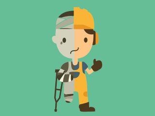

4. Medidas de Prevención en Entornos Informáticos
4.1. Prevención General
La prevención general protege tanto a los trabajadores como a los equipos e información digital.
- Mantener el espacio ordenado.
- Revisar cables y enchufes.
- No sobrecargar regletas.
- Apagar correctamente los equipos.
- Instalar antivirus actualizado.
- Realizar copias de seguridad periódicas.
- Usar contraseñas seguras y únicas.
- No descargar software de fuentes no confiables.
🔐 La seguridad informática es fundamental.

4.2. Prevención Ergonómica
💡 Una postura correcta evita lesiones.
- Pantalla a la altura de los ojos.
- Espalda recta.
- Brazos a 90°.
- Pausas cada 45-60 min.
4.3. Prevención Ambiental
💡 Iluminación
Evitar reflejos.
🌡️ Temperatura
Entre 20ºC y 26ºC.
🔊 Ruido
Reducir distracciones.
4.4. Prevención Psicosocial
- Evitar estrés.
- Organizar tareas.
- Trabajo en equipo.
📵 Equilibrio digital = salud.